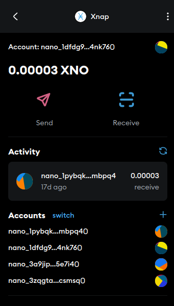
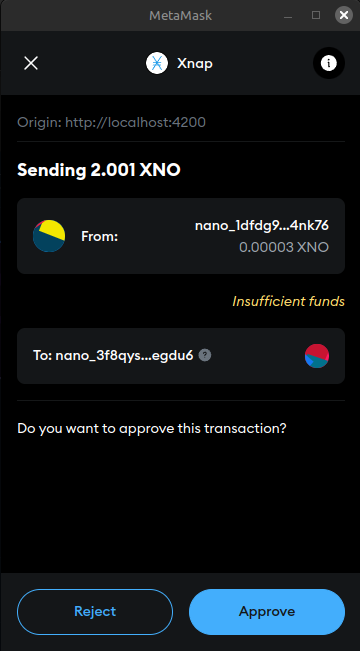
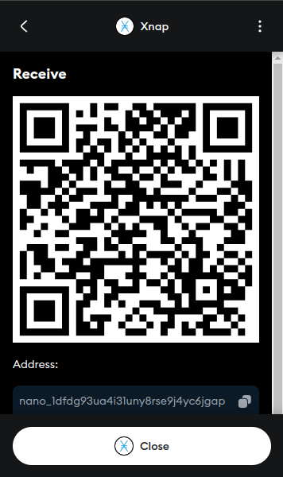
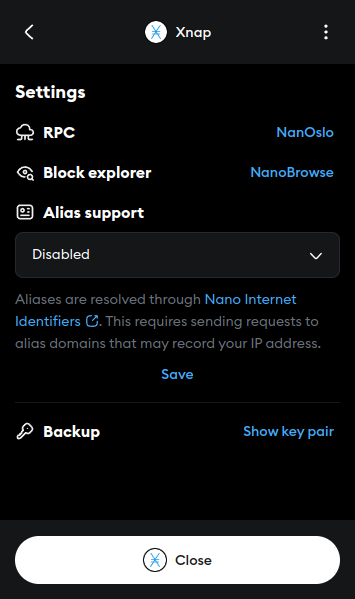
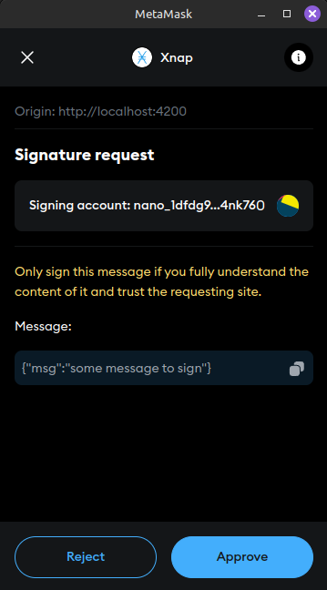

Nano meets MetaMask
Xnap is a MetaMask integration/SDK that allows you to manage your Nano (XNO) directly from MetaMask
Easy Integration
Seamlessly manage Nano alongside your other crypto assets
Secure
Built on MetaMask's secure Snaps infrastructure
Fast & Feeless
Experience instant, zero-fee Nano transactions
Frequently Asked Questions
Is this secure?
Xnap is built on MetaMask's secure Snaps infrastructure and was audited by OtterSec. However, as with any software that manages private keys in a browser environment, you should always be extra careful with your private keys and only manage small amounts of nano.
Do I need to manage another seed phrase?
Nope. That's the beauty of Xnap. Your existing MetaMask seed phrase can automatically (and privately) generate Nano addresses whenever needed. No additional seed phrases to backup or manage.
What makes Nano different from other cryptocurrencies?
Nano offers instant, feeless transactions with minimal energy consumption. It's designed for everyday payments and microtransactions where traditional cryptocurrencies struggle due to fees and confirmation times.
Current Features
Send & Receive
Send and receive Nano transactions with ease directly from your MetaMask wallet
Multiple Accounts
Create new accounts and switch between multiple addresses seamlessly
Backup & Recovery
Private keys backup functionality to protect your Nano
Message Signing
Sign and verify messages to prove ownership (SDK)
Nano Internet IDs
Support for human-readable Nano Internet IDs (aka aliases) for easier transactions
Custom RPC
Connect to your preferred Nano node by configuring custom RPC endpoints
Block Explorers
Choose your preferred Nano block explorer
Preview

Home Screen

Send XNO

Receive XNO

Settings

Sign messages